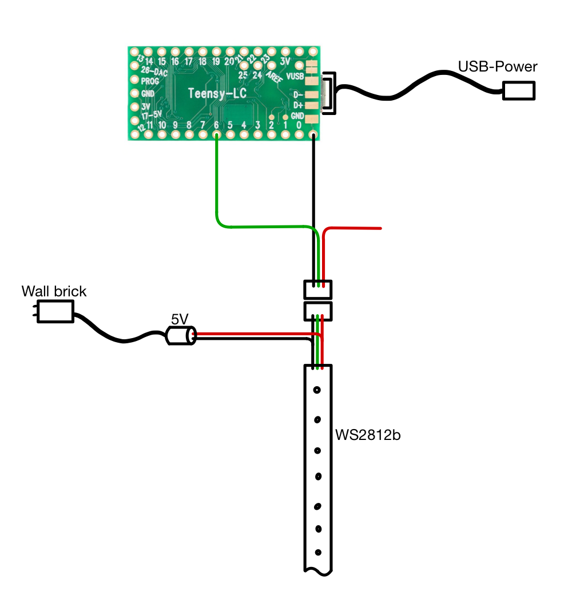

When I was younger, I was deeply involved in launchpadding. A Novation Launchpad is a MIDI controller laid out in a grid, with LEDs behind each button.
This setup allows performers to create synchronized light shows and finger-drumming performances, which translate especially well on camera.
After adding two more Launchpads to my setup, I wanted to create something custom. Within the launchpadding community, I learned about so-called “underlights” which are WS2812B LED strips connected to an Arduino-based microcontroller, enabling individual LEDs to be controlled via MIDI signals.
This made it possible to extend the light show beyond the Launchpads themselves and onto the desk surface.

Initially, the LEDs suffered from noticeable latency. After investigating the issue, we discovered that the problem was caused by an excessive number of update calls being sent to the LEDs.
By limiting the update rate, the latency was resolved. With this optimization in place, we were able to reliably control over 300 LEDs (5-meter strips) using a single Teensy LC microcontroller.
Cover image credits: UltraAurora, who —along with Mat1jaczyyy and Yaros— also contributed to the coding.
I’ll add a GitHub link to the project once I have an account on there.